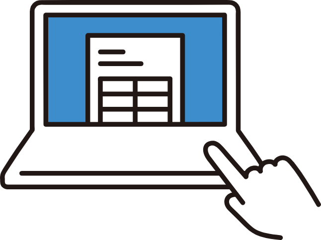
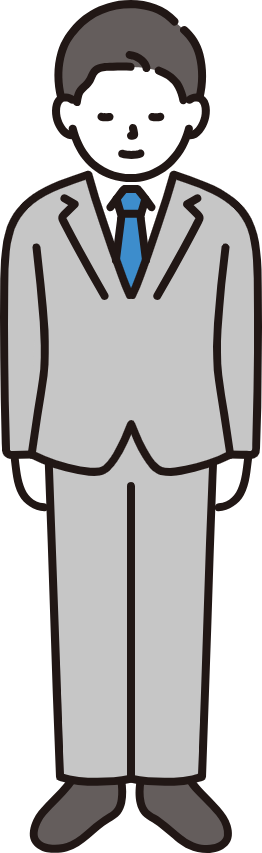
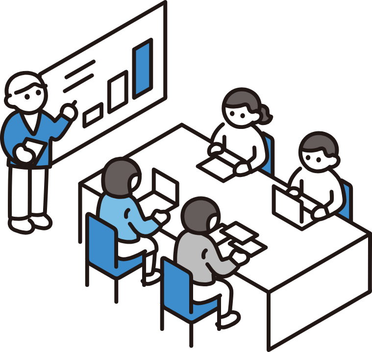
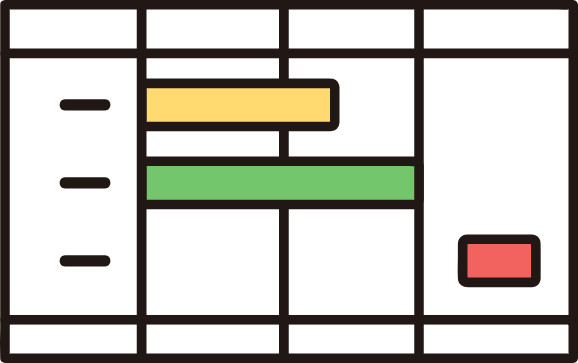
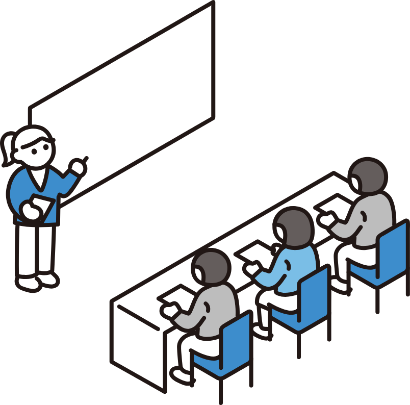

コーポレートサイト
会社やサービスの強みが短時間で伝わる、信頼感のあるページ構成を作ります。
About
HTML/CSS を中心に、ポートフォリオ、サービス紹介、業務改善ツールなどのWebページを制作します。 目的・導線・見た目の印象をそろえながら、スマートフォンでも読みやすいレイアウトに整えます。

Works

会社やサービスの強みが短時間で伝わる、信頼感のあるページ構成を作ります。

働く人やプロジェクトの雰囲気を見せながら、読み進めやすい導線を設計します。

情報量が多い内容も、優先度を整理して見やすいUIに落とし込みます。
Skills
